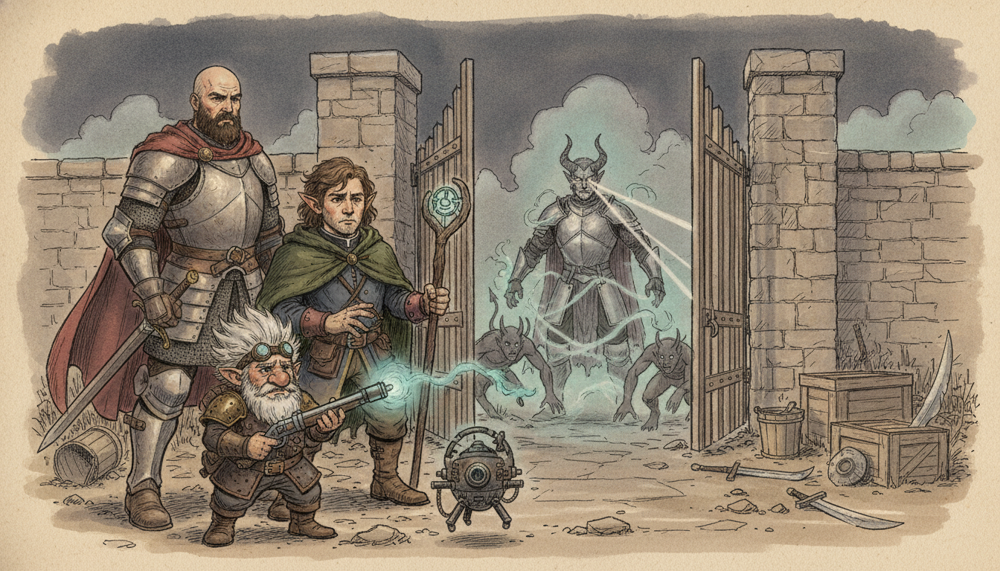
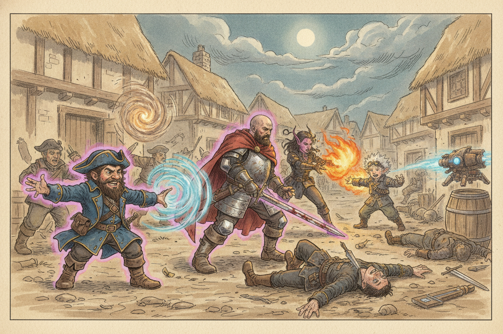
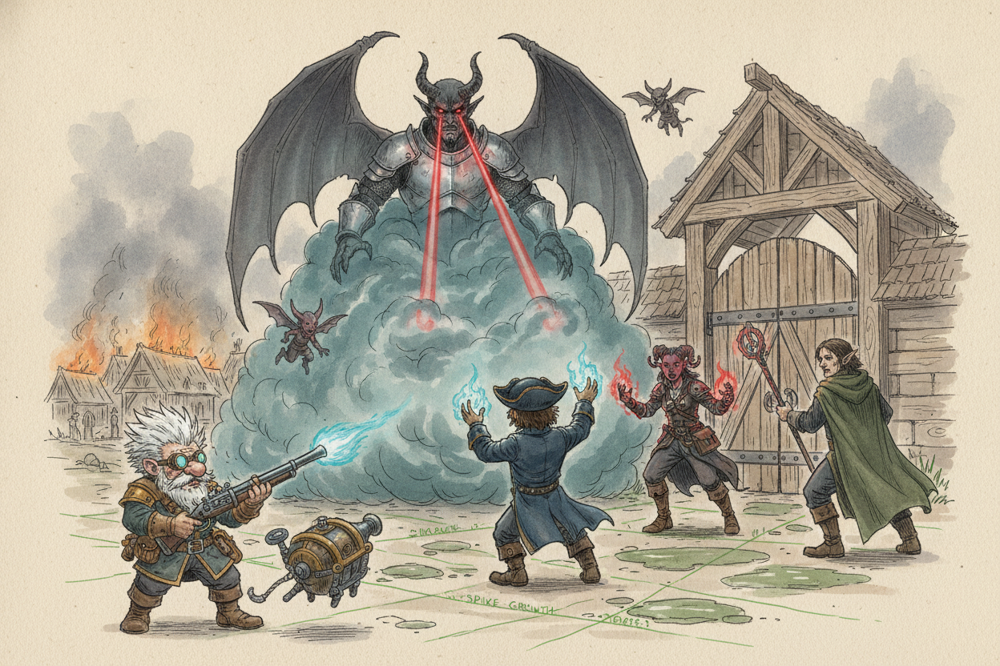
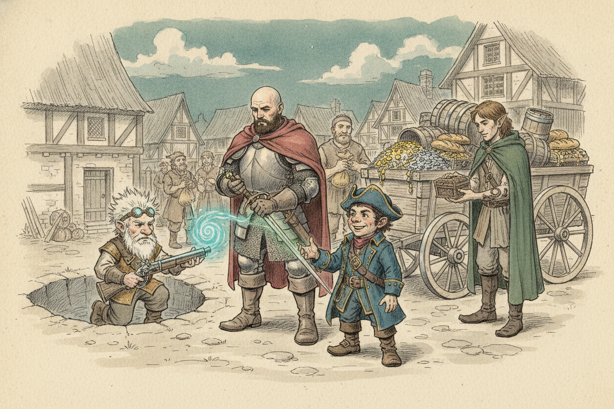
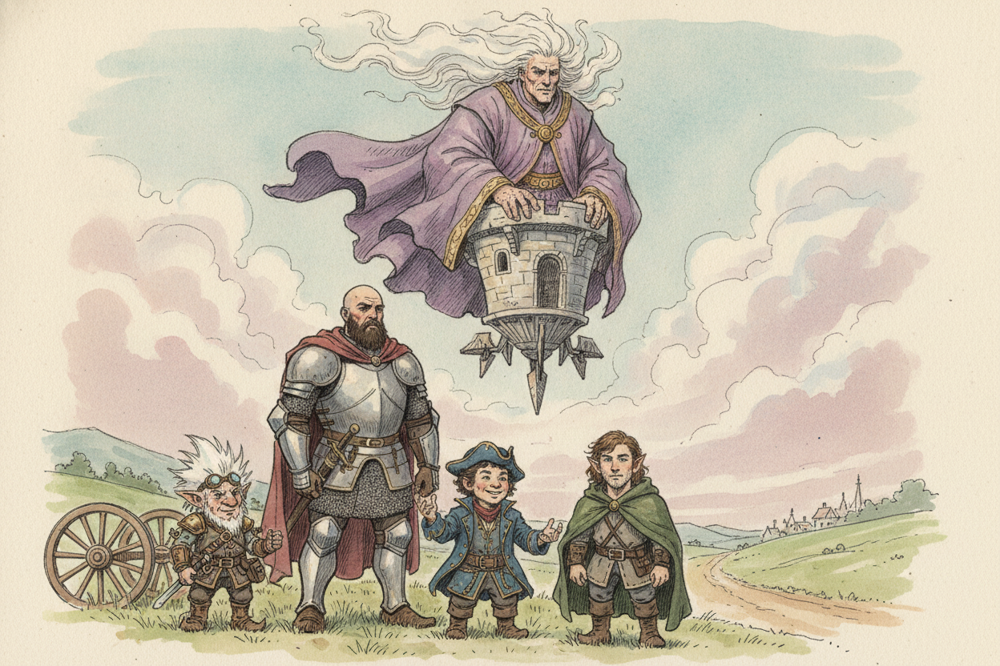

Session 2026-01-13

In brief: The crew finally toppled Corvin's takeover of Nightstone — only for Aganor's vengeance to summon Destiny, a cambion of Asmodeus, forcing a fighting retreat before a cloud giant named Zephyros descended to recruit them to restore the Ordning.
Storming Nightstone

The session opened mid-fight in the streets of Nightstone, with Toz whirling a Dust Devil through Corvin's bandit guard while Hal waded in with his new (and as-yet-uncursed-feeling) sword. The Tiefling sorceress Aganor — bound by an oath she had sworn earlier that day — fought beside them, hurling Burning Hands into Corvin's men. Corvin tried to slip the noose with an invisibility spell, but Fiz's Fairy Fire painted him in violet light, Toz's Thunderwave knocked his lackeys flat, and a flurry of bandit blades, devil claws, and finally Aganor's own dagger ran Corvin through. The would-be royal lordling of Nightstone died face-down in the dirt of the village he had usurped.
The Cambion's Bargain

Aganor's triumph soured the moment Corvin's corpse cooled. Cracks split the earth and four small devils crawled out, followed by a tall, silver-breastplated, devil-horned figure who introduced himself as Destiny — a cambion sent from the Nine Hells. Aganor, it transpired, had pledged to Asmodeus that she would not raise a hand against Corvin; killing him had forfeited her soul. Destiny offered to "do this the fun way" and made it plain he could wipe the whole party out with a finger. The crew tried to negotiate a delay, learned Aganor was destined for "several hundred years as a slug creature," and — when Aganor lost her nerve and lunged at him anyway — committed to a desperate, defensive scrap. Toz dropped a fog cloud over the cambion to blind him, the party readied Greases and Spike Growths, and Fiz tossed off heals while everyone backed toward the gate. Destiny's eye-beams burned Hal badly, but the fog and the cambion's lack of interest in anyone but Aganor bought time. They flipped the gate switches, fled the town, took a short rest in cover, and waited him out. By the time they crept back, Destiny was gone — Aganor still alive, profusely apologetic, and shaken into honesty about the oath she had broken.
A Town Repaid

Nightstone was theirs by default. Molak and the grateful villagers, with the merchant Corvin had murdered no longer around to object, kitted the crew out: four draft horses, a wagon, 150 gold, 85 silver, a sack of copper, three 50-gold gems, a potion of healing, a scroll of Continuous Flame, mason's tools, a fine bottle of Dragon Breath whiskey, a cask of ale, and a stack of foodstuffs. Xolkin of the Zhentarim revealed his winged-snake tattoo, made noises about Kella having "stolen" something from him, and pressed a magical item on them as thanks. Fiz inspected the pit where the Nightstone itself had stood and pulled what divination he could from the empty ground. The party also confirmed the cursed sword Hal had pulled from the crypt — a +1 magical blade that leaves its bearer mistrustful and gives disadvantage on social rolls with elves.
A Giant in Purple Robes

As the crew debated where to sail — Triboar to chase the genie bottle lead, Bryn Shandar far to the north, or Waterdeep — a cloud giant in purple robes, his hair literally made of clouds, descended out of the sky on a flying tower. He introduced himself as Zephyros, declared the crew "the ones who will restore the Ordning," and laid out the cosmology: the Ordning is the hierarchy that ranks all giantkind, it has been shattered, King Hekaton the storm giant has vanished into the sea, and his daughters (reachable only via Maelstrom, deep beneath the ocean, through one of the giant lords' conch shells) are trying and failing to put things right. Zephyros admitted that consorting with other-planar beings via high magic had affected his brain — "but it has been worth it" — and offered passage in his tower.
What's next
- Board Zephyros's flying tower and let it carry them toward their next lead.
- Triboar remains the strongest thread — the contact there reputedly knows about the genie bottle.
- Golden Fields was named as a nearby alternative stop.
- Acquire a giant lord's conch shell if they ever mean to reach Hekaton's daughters at Maelstrom.
- Hal still carries the cursed crypt-sword; finding a way to lift or live with the curse is open.
- Aganor survives but her soul is forfeit and a cambion may yet return for her.
- Xolkin's Zhentarim ties and his grudge against Kella are unresolved.
- The DM noted the prologue has ended — Storm King's Thunder proper begins now.
Raw transcript (488 chunks of auto-transcribed audio)
Lightly chunked. Expect overlap with table chatter.
and you're all being recorded okay so i'm gonna cast dust devil um which is gonna create a little movable token thing that how big five by five perfect and as my bonus action I can move it thirty feet in any direction and any let's see any creature any creature that ends its turn within five feet of the dust devil must make a strength saving throw and a failed save the creature takes such bludgeoning damage so I'm going to just move it on to that guy okay Does that affect us? Is there any creature that ends its turn there? Let's see. Is there also when it first... Any creature that ends its turn within five feet of the dust devil. Sorry, so I'm going to move it here on this guy.
I guess here. It can't be in the same space. Yeah. Sorry. Will that affect us if we get too close to it? Yes.
What was it again? Sorry. Dust devil. And the last part you said. So any creature that's within five feet of it will take some damage and it gets pushed ten feet away. And as a bonus action, you move the dust devil up to 30 feet in any direction.
I guess I could just cast it and be right there because it's got a range of 60 feet. So I'm supposed to put it there. Can I hold my bonus action until later? No, you've got to use it on your turn. Okay. um can you prep up on this action no you're not swinging the bat if the dust level moves over sand dust loose dirt or small gravel it sucks up material and forms a 10-foot radius cloud of debris around itself so you said what is this it's a loose path loose earth So it would have that effect, you would say?
Okay. Within 10 feet. So, um... And that just, uh... Lightly obscures the area? Heavily obscures it.
Oh, heavily obscures the area. Uh-huh. So I'm trying... I'm just trying to think where's the best place to put it. I think where it is is fine. But you should probably move.
Or, sorry, Eno should move, so... Um... You won't take damage, which won't be able to see. It's 510, so... I don't know how that... Wait a second.
His bonus action, you must move the dust devil to 30 feet if the dust devil moves over sand. So I guess since I placed it there, it didn't suck up anything yet. That's true. Sorry, this is a complicated spell. That is the rules. I don't like it, but...
All right. I'm just going to leave it there. and for my movement, I guess I can use my bonus action to disengage, right? So I don't take an attack of opportunity. Yeah. Sorry, I'm just trying to remember.
Uh-huh. And then I'm just going to move, like, here. Okay. And that's it. Okay. All right.
So because he hasn't moved, nobody's obscured? Nobody's obscured. When I move it, though, if it goes through those spaces, it will have a 10-foot radius cloud around itself. Okay. These guys... You could start it off to the side, right, and move it into those guys.
I mean, they're moving anyway, so I'm going to... So they all move out of the dust as it bothers them. Not bad. this guy's gonna disengage move there and then we're gonna get two guys we're gonna attack snigbat you're not least surrounded we should So just to keep the tracker. Yeah. One hit on Snigbat, and then three are going to attack Fizz.
Miss. Hit. What's your AC? 14. So one hit on you. five damage on snigbat one two damage on no that's six damage on snigbat he's knocked unconscious he gets death saves because he's a hero Just two on me.
Two damage on you. Okay. One missing. One disengaged. Okay. These guys are next.
This one is Sulkin. Leader dude. Okay. They are going to move up. and critical miss miss hit critical miss critical miss So these guys both, they were firing their crossbows, they miss. Critical hit on this guy.
Seven plus one. What do these guys have? Okay. When you first go to attack somebody, what skills do I add to that 20? To determine if it answers me. Uh, here.
I have like an actions. Two, three. Yeah, I should tell you here. So, plus five. Okay, Corvin is going to go. he's gonna take a swing from her fighter class?
I'm not sure. It's probably a big stitch. Hits. She probably does like a D4. 4. Smack.
Okay. He runs inside. Grabs his wand. Comes back. yells out an incantation, swings his wand around, you see six, seven shadows leap out of his wand, each touching one of these guys, and then suddenly each of them becomes sort of blurred, where they're like, it's hard to get a fix on them, they're like, as if they're like stepping to the left and right, or like they have an image sort of projected out of them that makes them harder to hit. And on himself as well.
Who's this guy? In front of... That's the tiefling. That's the tiefling. Oh, I forgot to roll for her. The tiefling is strong.
She got a stick of a sword, right? She got a spell casting focus, so I don't know. Oh, was she on our side? Yeah. Oh, okay. I was about to hit her with my sword.
Don't do that. Okay, now it is Eno's turn. Give him hell. I'm trying to think. How's... How's...
Maybe I'll just start with something simple. And then... It'll be the tiefling next, and then how. And then fizz. Um... If I move this way, do I get an attack for opportunity from either of these guys?
From this guy? Yeah. You would. Where are you trying to move? In this direction. If you move, yeah, so you're in his reach and in his reach.
Okay, so if you stay in his reach, you'll be okay, but you'll be within 5 feet of this thing, so keep that in mind too. He also disengages with your bonus action. Disengage is an action? Yeah. Oh, it's an action. I think I'm just gonna...
If he moves diagonally, but he just doesn't want to end his turn near the dust devil. He can move by it just fine, right? Yeah. If he moves diagonally that way, does he take an attack? Does diagonal, is that a thing? Or is it like, yeah?
You just can't do two in a row. And that's not an attack of opportunity? Or it is an attack of opportunity? It is. If you move out of someone, if you're in someone's reach and you move out of their reach, they can take an attack of opportunity. Okay.
I think I'm just going to start with a sacred. So that's one. 1d8. That's the attack, right? Yep. They make a dexterity save against your fails.
So does a d8. One. One damage? Yeah. That's unfortunate. Who are you hitting?
I guess I'll hit this guy. you're gonna move they get two attacks of opportunity wish I had done something differently um I mean I guess yeah so so going into the grass is not blocked or anything right nope if you're close to me I have a shield and I can use protection on you while wielding a shield the creature and a creature you can see attacks a target that's within five feet you can use a reaction to impose disadvantage on the attack roll Does that work? That's on your... I think that's on your turn. Well, I mean, you can use your reaction, right? So if one of them attacks you, then he can use a shield.
Right. Is that how that works? I don't know. Yeah. What is the ability? Sorry.
Protection. While wielding a shield and a creature you can see attacks at target, other than you within five feet, you can use your reaction to impose disadvantage on the attack roll. Okay. So this guy would get disadvantage? Yeah, that guy would do that to give him disadvantage. Oh, so that could be on an attack of opportunity, too.
Mm-hmm. Okay, so I'll give it a shot. To you. I'm going to move in this direction. Okay, because I'm going to go after the wizard. 5, 10, 15, 20.
Okay. Should I do that? Am I going to be stuck with this guy? Like, if he moves, is he going to hit me? I don't think so. I mean, I can move him 30 feet in any direction.
I forgot if... I thought I heard you say something about when he moves it at like 10 feet or something. But it'll be just visibility. Okay, then yeah, I'll stay right there. But I'll move that strategically the next time I... Okay, so one of them makes an attack of opportunity.
Disadvantage misses. The other one gets a critical hit. Ooh. I should have been Barkskin. Wait, is he within 5 feet of me? He was when that guy attacked.
Yeah. Or wait, oh, within five feet of you? Oh, is it with hits with an attack, or what is it? Oh, they have to be within five feet of you when it happens. If the, yeah, if the other, it needs to be within five feet of me. My character or the person that's attacking?
Your character. You're not within five feet of them. You take eight slashing damage. Ouch. 27 minus eight. Okay, the tiefling raises her hands up.
She casts Burning Hands, so he makes a... Fails a save, he takes 3, 6 fire damage. Which is going to be... 11, 12, 14. How much damage, Zoe? How much damage?
14. On the wizard guy. How does he look? He looks hurt. I'm very badly burned. Still alive.
I look very badly burned. Okay. So when she does that, she screams, fire comes out of her eyes, and cracks appear on the ground underneath her. She's a double woman caster. When this happens, the ground shakes. Everybody make a dexterity saving throw.
Critical save. Save. 10. Great. Save. 20.
Fail. I got a 12. Do you add anything to it? Dexter, already. Yeah, so 12 plus 30. 15?
Uh, everywhere. What in the whole map? Earthquake. I got a 15. The world? So, guys.
I'm just gonna pass, right? Get one. So you're, uh, you're not prone, if you fail. What's the saving? Dexterity. But I mean what's the number?
13. Okay. So you got one, two, so she created a little earthquake. So four. No, this guy's saving throws. It just knocks you prone.
Oh, okay. Two, so I got, well, eight failures. God, how can I mark these guys as... You can mark them as dead. Prone. Limits of 2D.
You just tap them. Tap them to 45 degrees. These guys are not prone. Well, knock my player over if you want. Oh, also the wizard. Did you not pass?
Saves did not pass. Oh, I figured you were trying. I guess that's the advantage of minis. Yeah. He looks so helpless. Okay, this is like a different photograph.
Okay, Hal's turn. Yep. Do you want partial cover? Would you say it provides cover? Yeah. You've got to go through, like...
All of these rocks would as well. Is this a door here, or can I move here? Looks like an entryway. What's going on? Yeah, it's like a double door. Fully covered on both sides, right?
So I'm out of sight. Can I hit him from here? This is like an awning. Okay. If I'm here, can I take a swipe at him? Yeah.
Okay. Get up. Get up. Okay, it's with disadvantage. Why with disadvantage? Because he's got the illusion thing on him.
Okay. Come on, new dice. Then I... Standing up takes half your move. Ten. Four.
Fuck. plus five nine nine does not hit seems like you're gonna stab right through him but all you hit is air okay it's very confusing are any animals around I can cast animal friends okay Fizz's turn alright Fizz you are just in the middle of the shit yeah he's prone he's gotta get up I think I'm kicking that mechanic work. Yeah, I stand up. I gotta get out of there. What does that do? It removes your movement speed?
When you get up from prone. It uses half your movement speed. I'm at 29. And while you're prone, melee attacks have advantage on you? Yeah. And range attacks have disadvantage against you.
How much do we care about Snakebat? He's got 1 HP. He's down. Oh, he's down. He's making death saves. He could do something, but it would probably kill him.
You can't see that he's there because he's unconscious. I am going to stand up and then... Super Saiyan. Pull out my spell-hesting device, basically. I need a name for it. A wand?
It's not a wand. It's just pure flavor. But, uh... I turn a dial on it, and then you see a big puff of smoke around me. And I misty step to 5, 10, 15, 20, 25, 30. Did you use half of those?
Getting up? Nope. The misty step takes me 30 feet away. You what? The misty step spell takes me 30 feet away. I just appear over here.
and then I jump in this thing the guy from X-Men you jump in the hole? so it's 5 feet deep, the hole it's easy to climb in and out of it ok take fall damage uh snigbat, saving throw death save what is this one? no, it's a d20 that's a d12 what is the death saving throw? So he has to make... Oh, you should have rolled the d12. Oh, so he has one failure.
How many does he get? If he gets three failures, he's dead permanently. What's the... If he gets three successes, then he's unconscious, but alive. Staple. What if he...
How many rolls does he get? Until he gets three successes or failures. Oh, okay. Or if somebody heals him, then he's stabilized. That can be what I've heard. Okay, we're back to Taz.
Wait a minute. - All right. These guys have been moved a little bit. Sorry, I'm just trying to... These tiles, I'm just trying to move them on the right time. Like this, yeah?
I don't know, I guess we should say... Who saw me jump in that hole? Because to them, I might have just said... It disappeared. Unless you took a hide action, everyone... Who's this?
...would be aware that you're there. Those are just... I marked those guys as not prone. Everyone else is prone. There's a lot of people in their periphery that they'd have an easier time hitting. Oh, wait, sorry.
That was a bonus action, so I actually still have an action. While you're at you? To hold her from the... Wait, how did you... Getting up is not an action. It's not an action or bonus action?
So I was here. Nope, just move it. Yeah. So I'm actually going to cast Bless. Ooh. So.
I think you're encroaching on my territory. Encroaching on my territory. Are you wasting a bless on stick back? No, I'm blessing you guys. Oh, okay. So I gave you all a little device and then I turned a dial and hit a button and you feel this burst of energy.
Is it methamphetamine? Yeah. You feel the meth just entered your bloodstream uh so up to three creatures you are my three creatures of choice uh whenever you make an attack roll or a saving throw before the spell ends you can roll a d4 and add that to your attack or saving throw very nice d4 sweet so thanks for the blessing so what does that do again you can add a d4 to any attack roll or saving throw adding a d4 to your 20. And then I jump in the pit. Jump in the pit. Okay.
Then it's Todd's turn. Is it like a one-use type thing? Nope. Until the spell ends. It's a concentration spell. So you sit in that hole and you concentrate.
It lasts for up to a minute. Ten rounds. Yeah. Ten rounds of combat. You can get this. Okay.
my bonus action I'm moving Mr. Dust Devil here now he's on gravel so everything within 10 feet is heavily obscured where it is I guess and then I'm going to move forward and I'm going to cast Thunder Wave in this direction which is going to hit I think these four guys okay so it's like this cube yeah exactly you direct it's a cube originating from you yeah okay so then thunder wave is it that I roll? I roll a roll really good do do do so actually these guys roll they roll a constitution saving throw okay We got one success. And what's your DC? Probably more than 11. Yeah.
So two failures. Oh, actually, they have disadvantage because they're prone. So this guy... What is it? It's not more than 15, is it? Um, my...
Hold on. Spell safety, see? Probably 13. Where is that listed again? That is... It's 8 plus your charisma bonus plus your proficiency bonus.
Okay, so that's 14. 14. Okay, so he succeeds. Okay. But it takes half damage, probably? Yeah, so 2d8 thunder damage for each of the creatures.
And a failed save... Sorry, a successful save, you take half as much damage and you're not pushed. So, yeah. So this guy is saved. These two failed. So roll 2d8.
All right. 1d8 and 2d8. 14. 14, okay. These guys both die. Yay.
That's what I was thinking about doing. And he takes 7 damage. He takes 7. You're going to do what? A thunder wave. Oh, you have that too?
I do. He's on. And they get pushed. But instead, he decided to hide in a hole. I didn't want to kill Snape. Okay.
And I'll push it. Did they get pushed? Bad guys go. He didn't get pushed because he saved. He saved, yeah. And the two died.
Ah. They got pushed to death. Their bodies. now they're in heavily obscured right now just so okay so they have uh they can't see that well or we can't it means they can't see at all they're effectively blind and you're blind to them as well right um so no one can see each other in here uh okay so the bad guys he'll get up so he stands up moves 5 10 15 he stands up that's 10 5 10 15 are they able to move freely when they're heavily obscured Yeah it doesn't impact movement. He's a bad guy. 5, 10, 15.
He wasn't prone right? He's got 30. Oh right. So you can just take those away this turn. 15, 20. no he's still gonna all right so now uh so that's just a regular attack roll uh these guys are still prone yeah they're good guns that's a regular attack roll miss this guy on him is with disadvantage miss this guy on him is regular hit it's one hit and then him on him is advantage and that's a miss so i got one hit of all that and that is d6 plus one two damage i feel like that's the one that i did one damage do two no this is a good guy that just took damage oh that's the end of their turn and yep that's the end of their turn so this guy takes damage no he has to make a strength saving throw Oh, strength saves.
One guy saves. This guy fails. He has to take 1d8 bludgeoning damage and is pushed 10 feet away. Okay. Eight. Nice.
And pushed 10 feet. How many hit points is that guy? Or how hurt is he? Snakebent needs to make a strength saving throw. These guys all have 11. It's not his turn yet.
How does that work? You can still kick him out of the way. Okay, now the good guys go. They all stand up. These guys are going to attack him. He's going to get out of the dust cloud and attack him.
Is this a good guy? He's going to come. Yep. That's not a good catcher. Wait, I thought the red ones were the bad ones? Yeah.
Okay. Okay, so I got one, two, three, four, five attacks with advantage. On someone with 11? Yes. One hit. I believe that.
Two hits. Three. four they're all just massacring this guy bludgeoning him to death and then one attack on this guy misses and that's all the bandits Corvin goes he casts invisibility disappears. You still know where he's at until he takes a hide action. God. Can he get through that door?
That's a good question. I think he'd be able to move diagonally here. Can we see him? He's invisible, but until he's hidden, you know where he's at. 5, 10, 15, 20, 5, 30. So he basically negates the attack of opportunity?
Yeah, you have to go see a creature to make attack of opportunity on it. That also applies in the heavily obscured area. If they're in a heavily obscured area, you can't make an attack of opportunity. So he's not hidden yet. Correct. So you guys all know where he is, but your attacks will have disadvantage, and anything that requires you to see him, like some spells, say a target you can see, would not be able to cast on him.
How do we know where he is if he's invisible? I'm confused. It's just the rules. Because he's like the predator in visibility. He's like an opaque piece of glass. You can kind of see him.
Yeah, pretty much. That's the way one of the sage advice game writers described it. technically until like just being invisible doesn't mean you're not hidden. Maybe like see his footsteps or you just like can tell where he was going because it's all happening so fast that you can see which way he's moving. We can use fiction to explain it. But I'm not gonna.
In the dirt. Pooms of dust. Yeah. Eno's turn. I'm going how many have we got here? I got one, two, three.
Three bad guys. I'm going to use the shillelagh, but I believe I need to be right next to the person. Well, you cast it, and then your weapon is magic. Yeah, yeah, yeah. So, I... Oh, is that the action?
It's a bonus action. Cast it. Okay. And then it's an action to attack. That's right. Okay, so I'm going to use...
I'm going to cast it. I don't think I need to do anything to cast it. So it's cast. And then for my action, I'm going to attack this guy. Okay. And I create a D8.
It's a D20. Attack roll. That's right. This is a D20. Fuck. Plus, yeah, I'm not going to make it.
Five. Plus four. Plus a B with disadvantage. Plus a D4. oh yeah plus d4 but it's also a disadvantage well plus the I mean you could re-roll it if it's higher than a 5 but 5 plus what's your wisdom? wisdom is plus 4 oh so you get plus 6 on that right?
I don't think I've updated it since we've leveled up I had 1d8 plus 3 that's the damage but when you use shillelagh use your wisdom for your attack rolls instead of your strength Yes. So it'd be four plus your proficiency, so plus six. So five plus six is 11. So roll a d4. If you get a four, it's a hit. But you also have to roll another die, and it can't be less than a five.
All right. Nope. No. Oh, well. You have to shot. You also have to yell, Shemayling!
Tiefling's turn. she marches towards him can she she can't attack him she's gonna basically spreading her hands out spreading a cone of fire with a spell called burning hands that's his save which her let's see deck save what does he have on this not gonna do it. So, he's gonna take another 3D6. She's gonna finish this for us. Fucked up. 6, 7, 8, 11, 12, 13, 14.
Okay. Now he's got to make a save to not lose concentration on his invisibility spell. Okay, so he needs to get higher than a 10. A 10 or higher. Still invisible. Still invisible.
But he's whimpering. That would have been nice. okay uh ground shakes again more cracks appear you're actually safe in the hole it's a situational ruling see see how that works nice um everyone else yeah deck save need a 13 or better 12 wait the bless does that help on this yeah it helps on yeah okay plus a d4 save save save save 16 fail okay one fail you got a three No, no, this is 1, 2, 3 Save Fail And Save Then him You hear him Hit the ground Hold on, hold on did eno finish their next to the death double yes you gotta take some damage take some damage i should have just moved you get strength saving i should have continued moving because i didn't use all my movement but anyways how much what do i roll strength saving strength save yeah strength save is is what do i roll a d20 or yep d20 plus zero plus zero plus a d4 plus Jesus. What is five? Plus four is a nine. You get to roll the D4.
You take a D8. You take a D8. Oh, I get to roll damage against him. Jesus. I'm going to, next turn, I'm just going to heal myself. Okay, so you're pushed ten feet.
No, you're out of the way. The way from the dust devil. So it has to be... This way? Yeah. Okay.
Just gonna go in the house and take a tour of rest. And then did you make the deck save? What's that? Make the deck save for their shaky ground. I failed it. It's the bridge all over again.
Ragdoll. I'm gonna sneak that and make it save. More cracks appear. What's my spellcasting ability? And this time... I'm looking at your cell attack modifier.
Out of the ground, is it an attack you're doing? No, it would be cure wounds. Four tiny devils crawl out of the cracks. Cool. Things are looking up. I hope they're on our side.
Are they on our side? What's our read on this? You're on her side, I know. Make an insight check. Can I make a history check? Now this would be insight.
I mean, you can history to know about what you know about devils. Insight, 14 plus... 3. They seem like neutral parties. It seems like something to do with her. But they are evil.
So is she right? You don't know that she is. You know that she works with some evil god. That sounds pretty evil to me. That's sus. All right.
I play Bullscape. How does she react to this? She's like burning with rage. Okay. She's like lost control of herself. Okay.
That's good to know. Howl's turn. Damn it, one point. All right. You know, how many? How's your hit points?
You know. Who? Me? You. Eleven. But I have plenty of healing stuff.
Out of? I mean, I can. He can heal himself. You should be attacking. Yeah. You're a fighter.
Kill him. Attack. I can't see him, right? You do whatever you want. It's your character. Oh, the guy is dead.
The wizard's dead, right? No, he's not dead. No, he's just fallen down. Oh, he just fell down. Like, so he's fallen down. Oh, you went right next to me.
Okay, no. Like, we know he turned invisible. He went over there. So we knew here. Knew nowhere he was. We know where he is.
He's not hidden yet. He fell down. Can I run up to him and have a swipe? Of course. But with disadvantage? Is that what was your point?
It actually would be cancelled out by his being prone. So just a regular old swipe. 5, 10, 15, 20. So I'm here. So I am rolling a 7 plus 5. Plus a d4.
Oh, 7 plus a d4 plus 5. 2, 7, 8, 9 plus 5. Plus 4 plus 5. What's the total? 15. 15?
15? Yeah. No, wait. 16? We have 7 plus 2, 9 plus what? Oh, plus 5.
14. 14? 14 is a 5. Okay. This time your sword comes down, and it hits a magical barrier that's around him. Close.
Close. Wait, really? Yeah. Do you have any bonus actions or anything else you'd like to do? I mean, I can't see him, so I can't cast anything on him. Sure you can.
Well, then it's Fizz's turn. All right. I'm going to cast Fairy Fire. And when I do that, you guys all feel a little bit drained. You no longer get a d4. Son of a bitch.
But I'm going to cast it on what's his name? Corvin. Corvin. Can you cast something on him if he's invisible? This is an area of effects. This is an area of effects.
Each object in a 20-foot cube within the range is outlined in a blue, green, or violet light. I'm going to say blue. Any creature in that area when they spell his cast is also outlined in the light. If it fails a dexterity saving throw. For the duration, he will shed dim light and his invisibility is no good. Nice.
Oh, he's got a save? He's got a save. He's got a roll a dex save. Dex 14. Are you just applying it to him only? It's a 20-foot cube.
It applies to anything in the cube. I know. Where are you centering the cube? On him. He fails. He fails.
Or actually, I could do it so that just he is highlighted, I guess. I'm just wondering if we're going to do it on all the creatures. I don't know. 20-foot cube. So I'll get... This is the bad guy?
No, that's not... Yeah, I'll just have it apply to him. I'll do a cube right here. okay so he is now illuminated in magical light you guys can all see him um despite his invisibility spell yeah and uh any attack roll against him has advantage if the if you can see him which you can which you can so you now have advantage on attacks against him sweet let's hope you guys you're doing a lot of good from that hole now I keep trying and I think that's all I can do and I'll stay in my head okay, Snigbat's turn so save he has one failure basically you see me pop up out of the hole 14 one success, but then he takes damage from that so one more failure so he's got two failures and one success. If you take a strength saving throw though to take damage, he automatically fails. Does he?
Even though he... Because he's incapacitated. You're incapacitated, you automatically fail strength saving throws. Uh, so... Wait, how much damage does he lose? Um...
It's like twice your hit points or something? No, when you take damage, um... Oh right, if he was dealt 12 damage, it would kill him. I'm not going to kill him. Yeah. Is that per turn?
Massive damage roll. Yes. Not cumulative? Yeah, I think so. Okay. It's not dead yet.
Okay. Okay. These four little devils all swarm around her. And they're going to attempt to grapple her. So it'll be two grapples, both with advantage. So a 15 and a 18.
So here's her save against the 15. Saves. Here's her save against the 18. Fails. Okay. Trying to take her away.
Drag her down the hill. Could happen. Taz. Okay. So all the fissures are still open and it continues to add more fissures? Well it's a mess there.
Can we fix the gridding so I know like what creatures on what square? The bats are flying right? Yeah, these are flying. Yeah One is grappling right? She's here Yeah, they have to be there. She's lost.
Yeah, that one's in her square You know what minis are better, you guys are right. Next week I'll bring those little like plastic stands that you put little paper things in. Did you have like the whole box of these guys? I did at one point, yeah. I forgot that I have that. I don't know where they are.
I actually have a ton of minis actually. Just not these ones. Yeah. I get you. Okay. Toss.
Yeah. Okay. First, I'm moving my Dust Devil guy over here. Yeah. Okay. Isn't that going to obscure him so he makes it harder for us to hit him?
Um, yes. But I'm going to do something else. Then I'm going to Thunder Wave and I'm going to use the Metamagic Careful Spell, which I think does half damage to allies or something. I have to look up the exact description of it. Careful spell. I thought it was just you choose who saves.
Well, I think they still take damage. Like if they save, but the spell still does half damage when you save, I think they would take that. Choose a number of creatures up to your quiz modifier, which is up to four. I chosen creature automatically succeeds on its saving throw against the spell. Okay. So if the spell still does half damage, then it's going to take half.
Right, that's right. Okay, so I'm going to cast it in this direction, so it's going to hit, it's a cube, so it's going to hit this, this, this, this, this, and this. So everyone in that area. Who are you going to choose to save? Morvan? Hal.
Hal, the devil lady, and I think that's it for those two. Okay. So wait, I don't take any damage? So you do take half damage. Here's him. He's got disadvantage.
I think because he's prone. Yeah. Does he have disadvantage on deck saving throws? I think so. So a eight. I'm not going to do it.
So he fails. And the three devils that you hit, or you hit all four of them. All four. We got three fails and one success. And I'm going to say... Does the visibility affect this at all?
They're saving throws? Um, to choose which one is... I'm gonna say one, two, three, four for the ones, the one that succeeded. Two, two. Two, so that one succeeded. These three got hurt.
It's 2d8. Roll. 2d8. Where'd the teeth ring go? I'm gonna squash these bats. Mm.
In the middle. Wow, 14. 14. What kind of health do these guys have? So Hale takes 7. Tiefling Lady takes 7.
How you doing? Destiny Aghanor. 40. Well, you're fine. Yeah. His first damage she's taken.
These guys all have 10 hit points, so they're all dead. Not the one that saved. No. It's the one. And Corvin is dead. Yay.
Murder. I guess I didn't mean to cast this. Um. These guys surrender. They drop their weapons and put their hands up. Who's going to execute them?
Go get that experience. Good guys. I need to test this new sword. And I dissipate dust devil so it doesn't damage any further. Still got one bat. The bat doesn't surrender, does it?
I know what happens to this bat. These guys are going to physically apprehend. them what is this? oh this guy was these guys who were prone got forgotten about look at that they all surrendered I thought that was going to be harder to kill the guy in his nightgown that came out? yeah, Corbin Corbin's gone boss guy who beat the boss uh uh you know it's your turn okay he's still in initiative yes so you mentioned that she's lost control I mean she's not like she's just was singularly focused on killing Corbin okay it's not like attacking you guys so Corbin's dead now kill her does she still look like well now she's now she's entangled with this She looked like an erratic wand. I killed the one that was grappling her, I thought.
The one that was on her tile. There's one more right there. But it's not grappling her, right? Right. But it's still trying to grapple her, so she's now engaged with this image. I don't dissipate my distance.
I guess what I'm trying to get at is, does it look like she'll snap out of it when the battle's over? Killer. You wouldn't know. Are you trying to decide if you're going to attack her? Because I have a skill called calm emotions. People in this town trust her.
And it's kind of cool, but if it's not relevant, I'll attack the bat. What is it? I can't tell you if it'll work or not. Try telling her to calm down. What was it? She's overreacting.
It's called mansplain. You want her to transfer her rage. We'll do the... You know, I'm just going to go and use my stupid... I have a crossbow. So your shillelagh out.
But I have to go all the way up there? Oh, yeah. There's only one guy left, right? Yeah. We'll just say that's not difficult terrain, because I didn't ever say it was. But he can't see it because the dust devil.
Oh, yeah, so you have a disadvantage. You can keep walking me into these bad... Well, don't walk into the dust devil. Stop. I said a crossbow. I thought it was a bad one.
Whatever, let's do it anyways. I haven't saw him roll two. Ooh, 18 and 19. That's a hit. Finally. Crossbow 1d8.
It's going to be one. Four. I'll take it. Four plus three. So. plus two, I think.
Yeah, so four. I think seven, eight, nine. Total. Okay. Wait, is it your turn? Can you dissipate it whenever you want?
It's a concentration spell, so... A much larger devil rises out. God, demon. I just wanted to see. I've made nothing but bad choices this game. Crawls up, looks around, Because the reason why they're coming out is because she's lost control.
I think that's my theory. Like, if she calmed down, the fissures would chill the F out. Calm down. Can I could? I don't know. The fissures are there.
It's like when you choose a line to go into SeaWorld. You guys grab that? Yeah. It's always the wrong one. Why is the Legoland one? Or the grocery store, or...
It's like the beginning of an office space. Yeah. Costco. We're still going to go in an issue. So this guy calmly crawls out of the hole. Dusts himself off.
Who are you? What's up, bro? Miss Aganor, I presume. He says to her. Looks around. And that's So what he looks like is kind of like her.
He's a tall, like about the size of a six feet tall, handsome features, devil horn, wearing like elegant like a silver breastplate, fine black leather armor. He's like tailored and dressed well. Who's this guy? What do you buy these days? I got them for Christmas. You got them for Christmas?
Uh, how? That's all he says. Did he say something? No, I'm going to wait until his initiative order. Okay. Can I ask him what's going on?
Yeah. Hey, what are you good looking? What's happening? Well, let's suspend combat order for now. Okay. Well, if you must know, this woman made a pledge earlier today to Asmodeus that she would not raise a hand against that man, so I'm here to collect her soul.
Are you going to try and stop me? I advise you not to. Oh, wait, was that who we... was that who he lined us all up and had us swear to push to? Yes. I'm a purveyor of deals, if anyone wishes to...
What kind of deal... What's the wrong way for a soul now? A deal with the devil? Can we give you Fizz instead? She seems a little bit more powerful, more useful than us. This one's going to get me a promotion.
Okay. Why is that? because she's quite a powerful soul what if she doesn't want to go what does she say do you think if she doesn't want to go then I guess I'll just have to do things the fun way can we delay you taking her soul I advise you not to I mean can we negotiate to delay taking her soul oh you wish to make a deal Yes. Well, she fetches quite a high price in the hells, but what are you offering? She say anything? She's just standing there.
Is she doing anything? She's She starts to speak up. She's like jivering and starting to plead for her life. We have this powerful goblet here. You want to take our leader goblin? His name is Fizz?
Goblins are free. Why is he calling him Fizz? No, sorry, not Fizz. He's trying to get me over. He's over there in that hole. No, no.
No water amongst you, okay? What's the goblin say again? Snakebatch. Snakebatch. Snakebatch. Stop trying to offer you a goblin.
Let's see, I have six pounds of apples. Oh, make another death day, Fran. Oh yeah. If he fails, he's like dead. He's dead. Okay, he's dead.
He's a dead goblin. Oh, well now you're talking. Hmm. Do we tangle with this guy? What do you guys think? Well, I'd say, uh...
What's this price that she fetches? I think mine was a bit shite. Well, she betrayed Lord Asmodeus, So he'll probably torture her for several hundred years, turn her into some sort of slug creature, and then she can work her way back up, just as I did. Could be worse. She's a tiefling, though, right? So she's from the underworld.
She's devil blood. She is in the likeness of the lord of the hells. I'm trying to think I'm trying to think of a good argument here How buff is this guy? What are we looking at here? Yeah, how strong do you look? Do we know what we're getting into?
Make an insight check as a group Arcana? Kind of like you're eyeballing each other Figuring it out. It's going to be insight. That's not going to do it. I got 14. 8.
16 plus... 3. 19. 14 minus 1. 13. 10 total.
8. He looks tough, but it's hard to say if he's super tough. like kind of wipe you guys all out the flick of his finger it's tough to say um hmm uh who went last i think it was sneak bit I think it was Hal's turn was up next. Okay, you guys can see Destiny Aganor is... Did any of us hit him? We never hit him.
Hit Corbin? No, she took him out. Yeah, I know, but you tried. I tried a couple times. I took him out, technically. So does the devil not care?
About anybody else who attacked him? Who took the oath? Oh, well, you guys don't worship Asmodeus. Didn't we all take the oath? To your own gods. So it's between you and your own deity.
She made a pledge to Asmodeus that... She wouldn't attack the guy that was on there. Yeah. Rule of history. Wait, who did they... They asked us to pledge an oath to...
Our own god. To your own god. To your own god. That you wouldn't hurt anybody inside the town. So then she attacks. I thought we all pledged allegiance to the same god.
No. It was each your own god. I totally misunderstood that. What am I, Erling? History. Does it have to do with...
No. It's not our common. It's a history check on magical items, alchemical objects, or... I guess that doesn't count. A seven. History I'm pretty good at.
Eleven. Eleven. that doesn't help you but you see her reaching for her dagger getting poised to strike she's about to go for it so do you guys want to intervene or stand and watch intervene to prevent her from being get out of here you devil guy let's go get him we're going to start at the top of the order so it's Taz, you're up alright let me roll again I'm going to cast Expeditious Retreat on her. The Tiefling. Is it a touch spell? Ooh.
I don't think so, but I hear these work on this big dude. I don't even know what... Sorry. I don't even know what this does. Range. I guess I'm going to say range 1 plus 10.
Range and target self. Oh, wait. I can only cast it on myself, I guess. Sorry. I thought I could cast it on other people. Let me see.
Okay, never mind. Uh. All right, I'm just going to shoot a crossbow at him. There's some options associated with this that I don't know what they are, though. 18. 18.
I'm going to click on it. Oh. Okay. Let's say... Your crossbow bolt chinks off of his fine breastplate. Well!
What was it? 18. And he looks at you. That was a mistake. But you rolled with me. He has a big smile on his face.
Oh, boy. This guy's apprehended, right? So he's not, like, attacking him. That one, you can frighten him. One, two, three, four. He shoots two blasts of fire at you out of his eyes.
What's your AC? It is 13. Okay, the first one hits. Second one misses. That does... Can I still attack?
That's your action, so... Unless you have a bonus. 3, 4, 5, 6, 7 fire damage. These guys... And then you try to do it away. These guys are going to do nothing this turn.
They're all pretty unsure what to do. Crapping their pants. Yeah. You know. So you rolled an 18 attack? Correct.
And it did not hit. And it chinked off his armchair. I'm going to cast aid. That's an area. A range area of 30 feet. Hold on.
I'm going to need to figure it out. Shit, you guys are all spread out. Five, ten, fifteen. What does aid do? It gives bolsters, toughness, and resolve. Chews up to three creatures within range.
Oh, it doesn't include myself. So, never mind. You can aid our erratic woman friend. Yeah, but I got 11 health, so I was hoping I healed myself a little bit there. Oh, yeah. Did we try telling him to calm down?
He seems perfectly calm. We can, but it's like a charisma saving throw. I think I'll give it a shot. I've been doing dick this whole time. I can find it. There it is.
You read the description of the spell? It says, You attempt to suppress strong emotions in a group of people, each humanoid in a 20-foot sphere centered on a point you choose within the range makes a charisma saving throw. A creature can choose to fail a saving throw if it wishes. If a creature fails its saving throw, choose one of the following two effects. You can suppress any effect causing a target to be charmed or frightened. When the spell ends, any suppressed effect resumes, provided that its duration has not expired in the meantime.
Alternatively, you can make a target indifferent about creatures of your choice that it is hostile towards. This indifference ends and the target is attacked or harmed by a spell. Or if it witnesses any of its friends being harmed. When the spell ends, the creature becomes hostile again, unless the DM chooses otherwise. So, his, uh, you can kind of tell that his actions now are not being driven by strong emotions, and he is relatively indifferent to you guys. Okay.
It's even more intimidating. Just so you don't waste the... Sure. Well, he was. Is he still? Different towards this laser vision.
How much did you take again? Seven. Okay, I'm gonna heal myself. That was only one laser beam high. I forget what level this is. Sorry guys, I gotta go through my papers.
If I cast this on him, we could just run away, right? If it succeeds. Yeah. I guess I'm going to do a level one healing word. So 1d4 plus 3. What, should we run away?
Something like that? No, I was going to do that on myself. Just say sorry. I mean, he's going to take it. 1d4 plus 3. I'm assuming he's just going to follow wherever she goes.
Oh, he can have her. 3. So 3 plus 3. So 6. I heal myself for 6. What was the save for?
And that's my turn. That's pretty low. OK. I don't know. Speed will be halved, I suppose. She swipes it in with her dagger, but he bats it away effortlessly.
And then it's Hal's turn. Is that a 13? Where are my fucking spell slots? You an attack or I cast a candle? So far we've done this to you. It's not seeming doable if his AC is that high.
Or he seems very hardy. What'd she roll again? I missed. Oh, I didn't roll anything again. He rolled an 18. I mean, saving throws can still, you know, potentially hurt him.
I'm like, ooh. I see that arrow just bounce off his armor. I'm like, ooh. Looks pretty tough. What does the channel divinity do? Abjure enemy.
Well, he gets to choose a spell, and the spell is Abjure enemy. Yeah. So as an action, you present your holy symbol. and speak a prayer of denunciation. Choose one creature within 60 feet of you that you can see. The creature must make a wisdom saving throw unless it is immune to being frightened.
Beings and undead have disadvantage on this saving throw. On a failed save, the creature is frightened for one minute or until it takes damage. While frightened, the creature's speed is zero and it can't benefit from any bonus to its speed. Does it say that it's frightened of? Is it frightened of you? It's just my god On a successful save the creature speed is halved for one minute until the creature takes any damage So I can cast it on him.
If it's successful, he's like basically stuck in place and we can run away or if it's unsuccessful, we could Put some distance between us and him It's halved. His movement is halved. He does have disadvantage because he has a fiend. He's a fiend. There we go. And he's not immune to...
What was it? Fear? You don't know? Okay. I'd say give it a shot. Alright, so I'm gonna cast that.
So he makes a... Charisma saving throw? Wisdom saving throw. Wisdom saving throw, that's good. Wisdom saving throw. Disadvantage.
It's DC 12. DC 12. He fails. so what is it like holy shackles of light wrap around his arms and legs so yes right exactly until until he takes damage and now i pull out my sword and you see the expression on his face change from one of like calm composed to suddenly like panicked yeah doesn't know what to do doesn't understand why he's restrained in this way cool right I yell out run in the tiefling's direction I'm only familiar with when a creature is frightened of someone in particular but if they're just frightened in general what is the effect? so they have a source of fear which would be how which they can't move towards him and I think they have do they have to move away from him? they can't move towards him no some effects have that in addition with fear, but fear itself doesn't do that.
A frightened creature has disadvantage on ability checks and tack rolls while the source of its fear is within line of sight, and the creature can't willingly move closer to the source of its fear. Gotcha. His movement is zero, so I can't move now. Okay. So that was my action. That was Howl's turn.
Okay, so I still have your movement bonus action. It lasts for how many rounds? What's the duration? What's the duration? One minute. So ten rounds.
Wow. We have a lot of time here that we could plan something. But, yeah, we can... This lasts until he takes damage, and then it goes away. There. You just have all the fodder surround him, like with their swords like this, and swing at the same time.
Just push him into the hole, and then fill it in. And he's a tiefling, or he's like a tiefling? He's a devil. He looks like a tiefling. Like, they're related. Yeah.
Or is he? I thought he was a devil. No. He's a kind of devil. He's a kind of devil. Okay.
Fiends are... Devils are fiends. Right. But not all fiends are devils. Not all fiends are devils. I could cast Dust Devil again and...
But as soon as he gets hit. As soon as he takes damage. But he won't take damage. He's gonna... I just... I can use it to obscure his vision so that we can scatter and he won't know where we went.
Ah. Or I could do fog, actually I can do a fog cloud, just a little bit. I think I have some grease underneath him which will not be prone. Did you have like a one-way communication thing too? What's that? Okay, we're the tower.
So that was my action, do I have a bonus? You got a move or? Is there a bonus action? I don't think I have a... um which way are we going we're getting out of here we have a destination the entrance of the town is this way okay you guys want to leave the town are we going with that you're still right now it's closed corvin would have had them close it one of these guys probably yellow those guys open the gates Well, if you guys remember, there's just those two switches you have to flip to open the gate. Yeah, they can help us.
But then it takes three rounds to fully draw. It's fine. We got ten rounds. We're going to flee. Didn't we just have all the townspeople come back here? We did.
So the thing is, he is restrained, right? Yeah, he's restrained. His speed is reduced to zero, so he can't go anywhere. He can still do other things, by the way. He's not incapacitated. He just can't move.
Just can't move. And he has disadvantage on attack rolls and ability checks while you're in line of sight. He what? He has disadvantage... While he can see you. While he can see you, he has disadvantage on ability checks and attack rolls.
Okay. Stay behind. But I'll go before him and I can obscure his vision with fog cloud or something and help us get out. So how? Turn ending? Doing anything?
Three? Two? I'm going to run. I'm going to move over here. I'm assuming... So I'm still in the line of sight of him?
Yeah, you're still in the line of sight. I'm assuming that we're going to... Let's get the hell out of here. I think so. And he can still see me. I don't think we've been shotting at this guy.
Okay, Fizz? All right, buddy. Fizz, you've got to get the hell out of your hole. Yeah. And attack him. Fuck it all up.
I'm not going to be able to get very far. But, um... yeah i guess head towards the exit my speed is that great 25 take the diagonal square root of this is a building that's a big rock those are big boulders oh that's open space or is this a building this is all open space here this is like the town square this is of grass the um temple that you guys were in was like over here and then the entrance is like over here. I don't know what that happens. So five, seven, I don't think I have more tiles. Is it worth going to the temple?
Do you think that we have any kind of protection? We can pull some of those tiles up, pop them down over here. Oh. Side down. Oh, you don't have any, all the tiles? They're all maxed out for this, guys.
Didn't expect us to run away? Literally, um... Literally went all out. Run away. You could probably use these too if you wanted to. Maybe we don't need to.
Depends how far away he draws the wall. I'm just going to say it's... These are the towers. I could cast Grease. Okay, we just run directly this way. you sure could I don't know why you went the other way I'm gonna cast you can take that back as I go I'm gonna cast Grease underneath this guy alright okay Grease him up Grease him up real good and he falls prone he has to make a dexterity savings or anything uh yes dex 14 fails alright he's prone and where he is is difficult terrain difficult terrain he takes one point of damage no he stubbed his toe and it snapped bullshit he's covered in grease he chooses to land in an awkward way also I think the area is I happen to like grease depending on your DM area it could be considered flammable now no it's not he's not flammable web is flammable that's the thing it's in the spell description web's a second level spell okay and then don't sneak bat stud poor sneak bat so then it's back to Taz alright I cast fog cloud on it's a pretty big spell but like basically covering the demon guy He needs to be able to see me.
He needs to be able to see you to be incapacitated? No, to be... To have disadvantage on attacks. But he'll also have disadvantage on attacks from being in a heavily obscured area. And prone? Prone won't matter.
Doesn't matter? I guess he can't get up because his movement speed is zero. Yeah. But being prone doesn't give you disadvantage on ranged attacks, which is what he would use. He would blast you with his... But his movement is still zero, Even if he can't see, you know, correct?
How. Right. Or how. His movement's still zero. Okay. So, yeah, I cast a fog cloud, you know, centered somewhere around here, covering him so he has no vision.
And I move at maximum speed this way. One, two, three, four. I guess. Is this all open area down there? It doesn't matter. There's, like, a building here.
All right. I kind of go this way then. There. okay wait so bonus action i get to move more or no so i did an action and a movement do you get to move again uh if you have a bonus action that lets you do it yes but uh if you don't then it's like that yeah oh wait where's the grease splatter that one's in your imagination okay uh his turn you hear him just sort of whispering something shit what did he do shouldn't have shown you that wall You should do what? You didn't roll it. You can roll it again.
You hear, um, Destiny say, You have no power over me! Destiny? Is that the T-Fu's name? Yep. That's his turn. These guys are all gonna run.
Probably for the best. Can we tell them to open the gate? All the villagers leave. Okay, I guess, uh, waiting to see. Zulkin's going to lead the charge with a dash action, but he only gets to there, okay? Okay, all right.
The bad guys are good now. Well, I'm sure he's fine. Okay. Okay, uh... You know? so are we just trying to get away we're trying to get away and we're trying not to die don't move into the fog clap that's what I would say what do you have in mind trying to call still thinking about calming him down no not calming him down because I think that ship has sailed but once he gets out of whatever this is I was thinking about casting.
He's coming in there for quite a number of turns. Because he can't move. Can't see. And he's creased up. So that means we're trying to flee? We're definitely trying to flee.
Yeah. Okay. Didn't you see the laser eyes? I mean, you can spit on him as you want. You can dash. Just don't hurt him.
You can take a leak on him. A dash is a double movement? Yes. Unless you're going to do something else. 5, 10, 5, 16. Don't leave your diagonals.
I forgot my diagonals. You totally wasted your diagonals. Okay. You could have been at least two squares. It's her turn. She's gonna run too.
Is she dashing? Sure. But he does make an attack of opportunity. On her? Yeah. Oh no he can't because he can't see.
And he's prone right? It is prone. You can tell attack by it's prone. Oh, okay. But... Laser eyes from the ground.
You cannot make an attack bar when you get to the target. You cannot see. Wait, I'll hold yourself again. That was one turn so far. Okay. Hal?
I am going to dash. One, two, three. Where am I? How many spaces can I dash? 16. 16.
So each one is five. Eight, nine, ten, twenty. Oh, I hit that switch. You've got to go in, 10 feet up. I yell at one of the goblins, get that switch. There's no goblins.
They're just the... They're human people. I forgot the name. Their little cult is... Zantarum. The creature stab lock is bandit.
what? they're bandits that's the creature I'm using for them so I need to go 10 feet up hit the switch and then back down or I could okay uh me? yep forget it I'm dashing I'll say alright let's see 25 would get me there. Yeah, it's fine. I'll go there. You're not dashing?
Well, 55 would get you there. Hold on. Well, I mean, we still got to wait for the gate to... This is farther than 30, I guess. I mean, it doesn't matter. We need to...
I can't get the main chain, didn't I? We need to wait three cards. Zorkin's turn is going to be next. He said he was leading the charge. I'm like, open the gate. Says Taz.
You can go back and attack him. Changed my mind. I was going to... Don't be a hero. I'll just do a dash for now. Two.
Three. the four five and then another five one two three the four five there okay it's rough being a little person though You can pretend these aren't flames that are water. I didn't realize you had another one. Cyclops. Yeah, it came with two. Yeah, it's actually good.
It's good work. It could work for you. Yeah, it's close enough. What did you get? Water magic. Huh?
Did you get that online? No, at TC's rocket. You cast command on this guy. Granville? This guy's going to make a... Do what?
Wait. Creature you can see. Never mind. No, you can't see. You can't see. He's like, I'm going to kill you.
Neutralized your threat. He lets out a scream of frustration. You know what? He makes a two fire rays disadvantage. There's an email. How does he know where he is?
He can't see. How does he know where he is? He's just like Homelander. He's just going to laser the whole... You should have him do that. Just like laser everyone.
Where is he shooting? No, if he does that, then I'm probably the only one he's going to hit because these are boulders. I'm not trying to pick on, you know, just the closest one. He hears you running. And he shoots in that direction. It's with disadvantage, though, so...
I think I healed myself. Okay. miss oh he's one for each one for each eye uh let's say six uh 13 hit disadvantage what do I get it against oh yeah AC's 18 you're good you get your shield up it's your shield there's a um there's a like molten scar across her shield so you remember this encounter this won't be the last you've seen of me yes it will okay uh these guys okay so he's gonna go in click what was the save again What was the save? It was no save. It was an attack roll. No, no, that I needed to...
That I had my AC or my armor class. Your armor class. What did it have to be? What was the number that you rolled? 13. 13?
Okay, yeah. I was just making sure of being honest, because I think I have 18 because of my shield. I'm not sure that I have the shield when I catch lately, right? You still have a shield. Oh, okay. You'd want that, because you've got your club and your shield, now you're a melee fighting dude uh good how no did you know go no this guy went okay he went clicked the thing these guys are all just yeah can one of those guys go up and click the thing he goes up and clicks the other thing okay so the bridge starts going all right It's the second bridge again.
It's in the middle of turn two. Let's not die on the bridge again. Turn two. Okay. I've got 17 health this time. Well, I'm really far away, so I'm going to catch up.
So I'm going to use my diagonal movement. Your diagonal feature. I don't know, I'll just go here, I guess. And then... You got a wall of flame or something you can put up? I had Spike growth.
You guys were all taking off. I don't think you need to. Yeah, so I'm just going to, I guess, ready in action in case something comes up. Okay. Her turn. She's waiting for the bridge to open.
How? Just wait for the bridge to open. Waiting for the bridge to open. Yes. Everyone meditates for a round. Everyone's health doing okay?
Yeah. Feeling fine. Yeah, I think I'm just waiting. Oh, actually, yeah, I can... Yeah, whatever. Okay, pause.
One second. So I think we did at round... At initiative 20, the bridge goes. So it moves the first one-third of the way. I can make a little clockwork. No, wait, never mind.
That's not what it is. I thought I could have a little talk mark with a flame on it. But since you won't let the grease get over there. We don't really need to go in and issue her anymore. The guy can't do anything. I guess he's going to still shoot some rays at you guys.
Do it. I'm minding both. Okay, so he's going to get, like, two more shots off before you guys get off. So, and they're just going to hit people at random. So, 1, 2, 3, 4, 5, 6, 7, 8, 9, 10, 11, 12. Okay.
What about this guy? No, no. That guy doesn't get it. These are divots or boulders? How many people are in front of me? I've got a human shield.
So... These are divots or boulders? They're divots, because he dove into one. No, no. This one he said was a divot. But I think these ones he said were gold.
You know what? Sure. It's just going to hit this guy. So nine, five. That says wrong. All right.
I feel absolved at the time that I did it. Okay. Nine plus seven. This guy's fucking dead. One more. He killed two of your buddies before you guys got away.
With the bandit buddies? Bandit buddies. Didn't they have been the ones who were traitors? I mean, they were all kind of bandits. Yeah, but some of them didn't come over to our side. They were sympathetic to our car.
Do you guys flee the town, or are you guys going to come back after some time? Well, do we want to keep the devil lady near us? Because I think this guy could potentially emerge next to her. Well, he came up through the cracks in the ground. I don't know when she's going to lose her shit again. Yeah, well, let's talk to her Let's talk to her But we gotta get out of here Hey, what the hell?
What was that? Exactly He's gonna, like, murder all those people that we That we just saved And brought back to the town We don't know what he's gonna do No, no, he's very raw You did say he was indifferent I think he's singularly focused on On her That would be my assumption That's essentially what she assures you Yeah I don't think he's going to just start murdering people. She's like, when the shock starts to wear off, she's like, sorry, sorry. I didn't mean to start all that. I knew that I was violating the oath, but... How strong was that guy?
Well, he was a cambion from the Hells, a pretty high-ranking official. Could we have taken him? It wouldn't be impossible. That's a no. We neutralized him pretty well. I don't feel like I've been doing too hot.
Your luck was about to change. Well, what do you want to do? Switch my skills down tomorrow. Are you just tie-pailing it out of here? Is this guy going to come back for you? Is he going to pursue us?
From what I know, he can't just get a free ticket out here whenever he wants. So I think he missed his shot. Okay. I'm going to wait and then go back to the village and make sure everyone's safe. How long? Ten rounds.
Alright. No, I mean, she wants to wait, like, a couple hours. Yes. Like a short rest, a minute or a minute. Yeah, a short rest. Okay.
But we've still got to get out of here, though, right? We liberated the town, technically, right? So now we're... And then we brought some demons under it. There's only a few bandits left. They seem to be...
We're getting back here again for, like, cloud giant, like, intel. Right, like, that was our purpose. Yeah, I think we still should look around. I don't think we're done with the town necessarily right? If she's pretty sure that he's gonna go Alright, we'll go back to the town when she's convinced it's safe. But we need to deal with these bandits too.
They don't have their leader anymore They have Zolkian So I have this sword that I got but I need a long rest to understand it Short rest. Oh, a short rest Instead of a short rest could I try it out on a couple of these guys? no just like executing prisoners so Zolkin is pretty much like whatever you guys want you know but he has command all the bandits they're all following him now but he I forget how he left it with him on the last session he was sympathetic yeah you guys got him to help you kind of overthrow Corbin remember he was like wasn't he like mopping or doing something like pretty beneath him Well, what's your guys' plan now? Well, uh, we will not stay in town unless you want our help here. Otherwise, perhaps we will return to Yartar. Yartar.
Are we all writing down Yartar? Yartar is like, um, it's a town in the north that's like, kind of has a seedy reputation. We may be heading north someday. It would be nice to run into people that we know. Well, thank you for your help, I guess. Yeah, I think we should dismiss them.
The bandits should just go on their way. I thank you for everything. But wait, what's the deal with that snake? My snake? Yeah. Ah, well...
Flying snake. We saw it at our window. Oh, yes. I was using it to spy on you. Yeah, I figured that. And I did the right thing.
You're a predator or what? What's your deal? What kind of snake is that? Is it a magical creature? A little mean wager? It is like a creature that is normal that is made magical through enchanting.
And they are pretty common in the Zhentarim. He pulls a sleeve back and shows you his Zhentarim tattoo which is a winged snake. Sick tattoo, buddy. It's like a status symbol. kella stolen from me so uh women they don't only steal your heart uh he has something to give to you guys i just have to more shmeckles is it a rod a staff or a wand because i can use one of this you're gonna take a short rest outside before we come in yeah yeah well we said we're gonna wait a couple hours yeah it's even counts as a short rest yeah we what is a short rest until one hour of rest you can use it nice to heal if you want come on you know what hit dice are no come on you read the book you know so is that that's class base the hit by yeah it's exciting your class has a d8 is your hit die? Yep.
It's not D for everyone. And you have a number of them. Yeah. Should be on your character sheet. And then you can roll that many. You can do, there's probably a short rest button somewhere you can hit.
But you can roll all your hit dice or just one of them? You can roll all of them. And then you recover half of them on a long rest. I'll ask you if you want to use, have you taken a advantage? Yeah, you don't regain all of your hit dice on a long rest. You can What about a short rest?
You don't regain any hit die. You can use your hit die on a short rest. What does that do? It covers up. So you can choose how many hit die you would really use. Oh, you got D10.
One D10 plus three. That won't be available when you heal. So if you want to heal, that's it. You can use one of them. Or if you want to be sure, you can. - This one's a hit die.
- It's up to you how many you want to use. - One to eight. - You get that many until you take a long rest. And then when you take a long rest, that'll reset. - Oh, okay, cool. Oh, that's pretty sweet.
- So you can heal some right now if you want. - Oh, but why did you? - So is that what this means? - I don't know. - It's on a short rest, you can roll a hit die and then you just kind of use it once? - I guess so, yeah.
Then you can't use it later. - Try to heal. - Yeah. - I did it. - Well, you unchecked that. only thing i have it's in a health potion another genie no it is a potion of heroism potion of heroin yep no yeah that's what i thought uh when you drink this potion you gain 10 temporary hit points that last for one hour for the same duration you're already a touch of the last That's weird.
Don't you hit your centers? Nice. This is weird. Let's try it again. There you go. Plus 13.
Got it? Okay. So you're going to take a short rest. Okay. Coming back to the town, you see that the area is clear. The devil is gone.
The ground is still a bit torn up, though. So, you might feel guilty about that. And the townspeople are sort of expecting what's going on, milling about. Molot comes up to you, says a bunch of stuff. You used up his dialogue. That was important.
Just a profuse thank you, and he says that the townspeople are going to gather up what they can as a way to repay you. Did that? Wait. The wizard guy had a wand. He had a rod. A rod.
Yes. He had a wand and a rod. Okay, so you find his body. on it. Oh gosh. This dude is gone.
This dude is gone. You find a magical rod. Apparently it's magical. That's something with disadvantage. Tax of disadvantage. When you take a short rest and study the item, you will learn that it is an item called the Rod of Stone Shaping.
It allows you to cast the spell Stone Shape once per day. Anybody want this rod? I would like a lot. You should take it. On your short rest, study the broad eye. Not you.
You can't use it. Don't worry. I'm excited. No, take it. What is it? The, uh...
Inventory... Inventory... Where's the ship? In rod we trust. Is that his figuring? What was it called?
The rod of stone shaping? Mm-hmm. Rod of Stone shaping. Nice. Does it come out? It does.
Okay. It's my own creation. Oh, is it? Yeah. So how does that work if I want to then infuse it? I think it works with any other rod.
Okay. But you also have the ability to cast stone shape once per day. Cool. What's the name of the sword that I got? Elfbane. Nice.
That's why the elves don't like them. I'll do it real quick here. So the weapon is imbued with the hatred that... What's his name? Something Nandar possessed for Elvikkind. And that hatred of elves is now passed on to you.
While you are in possession of the sword. And it deals an extra 1d6 to fey and elf-centered creatures. Does it extend their hatred towards him? 1d6 to fey? fairies oh fairy fairy and you're not elf are you one of you guys is a half elf right yeah wait you're a half elf do you half hate him now wait which one hey that was my father so um now you know to you kind of like has like an odd smell and like his voice rating. But it adds a 1d6 to my...
But your previous trust for, you know, it's not eroded. It's just a personality quirk that you have now that you're mistrustful. Asshole. The sword is cursed. Sorry, I should have said that. The what?
The sword's cursed. Oh, goddammit. I think it depends on your perspective. Right. It's not me that's cursed, it's goddamn helps. Can I get rid of it?
I can just like drop it down a well You cannot willingly part with the sword Fuck, okay You need some sort of way to break the curse Find a way to break the curse But it, you know, the curse is that you're mistrustful of elves It's not that bad of a curse The elves already don't like, you know Role playing You can just totally disregard Alright You know, try to bring it up Make him roll with disadvantage when talking to elves. Oh, and it's a +1 magical weapon, by the way. Nice. Yeah, another quest at all. I don't know what that means. A lot of creatures in this world are resistant to attacks with mundane weapons.
Okay. A weapon being magical overcomes that resistance. And the +1 means you get an additional +1 on the attack roll and on the damage roll. And on the damage roll. Yeah. Okay.
Pretty good. You should be able to find the sword. Do you know what that means? I don't like it. Plus one attack. So what does that mean?
Plus one to my 20 roll, plus one to my damage roll, which I don't know. There you go. I'm trying to find this thing in here. I feel like these items are tailored. I got temporary 10 health. Okay, so there's one other item you find on Corbin's body, which is a red magical gem.
And that is a Corundum Elemental gem. Does it have any writing on it? Should it? How do you spell Corundum? What was it again? It was a gem.
In a language I expect you not to know. Primordial? I know Primordial. I think I speak giant and yeti. Is it yeti? It is.
Red corundum elemental gem. A fire elemental is summoned as if you had cast the conjure elemental spell, and the gem's magic is lost. That's pretty cool. In a pinch. One use, huh? One use.
You have to eat it to use it. What is this gem? Just jam it into your forehead. That's right. What does it do? Vision style.
It summons a fire elemental. Oh, sweet. Which I guess you can then use in battle. Cool. It does follow the rule of the summon elemental spell, which has a concentration component. It's really important to that spell.
That's a problem. Because it doesn't go away when you lose concentration. It takes a minute to cast it. Oh, but you just smash the gem. You bypass that. And you get it for an hour.
Okay, in Corbin's stash in his house, you guys find a bunch of stuff. I'm just assuming you guys loot all this stuff. Yeah. In the future, hopefully you guys remind me that you loot stuff. I'm looting. Okay, I'm looting.
In Corbin's house, you find 150 gold. Nice. All right, I'm just going to keep track. 85 silver. I can post this all in the chat if you want yes please can you do it when you said you would do it last time did I say I would do it? I thought you guys wrote it down I did write it down I wrote 25 gold last time I thought you said you couldn't read there's a party stash in D&D Beyond now oh yeah?
no no I wrote 25 pounds of food okay so 150 gold 85 silver 220 copper Three mundane gems worth 50 gold each. A potion of healing. A set of Mason's tools. A spell scroll of continuous flame. One fine bottle of whiskey from the Dragon Breath Company worth 30 gold. One gallon of ale in a wooden cask worth 8 copper.
eight pounds of potatoes that's good I go through one called Verdant Terrors of Faerum by Bolotham Gedarm a book about various types of monstrous plants worth 25 gold nice I don't know how to spell any of that so I will post it in the chat chat right now. Okay, the townsfolk also gather up treasure as thank you. Ceremoniously, they present you with Lady Nandar's wedding ring, which is worth 750 gold. We're all getting horses. A velvet sack containing 180 silver. A silk pouch containing four gemstones, each worth 100 gold.
And a silver jewelry box worth 25 gold, containing three gold necklaces, each worth 250 gold. Wow. Remote. I was going to say we couldn't possibly. Couldn't possibly, but I do believe. they have gathered all of the treasure that was around the town and in the keep.
And they gave it to us. And we still kicked in their doors and looted their house. Just the one, guys. And the 150 gold was presumably the money that was supposed to pay you for the delivery that they stole from Molac. How much did the ship cost? I think you put it in the chat once.
At one point, yeah. It was a lot. And you guys all reached level 5. But I feel like it was in the realm of 3,000 to 5,000, which I feel like we may actually have with all this stuff. Possibly. Can't take a boat inland.
No, but there's places you guys can go by sea. So I guess here we've got to figure out where to go next. So this effectively concludes the introduction. and the beginning of the actual campaigns from King's Thunder. So this is the prologue? Yeah, the prologue's ended.
Training wheels are off now. Alright. I cast a spell and I tied a demon down. Which one's the d20? Now we're greasing up the next bad guy. No, I'm greasing up the next bad guy.
So if I remember correctly, the reason why we came back is because we were trying to figure out our reasoning for going north because we didn't really have a lot of information no we were going to go find that woman who knows about the djinn or the djinn do we still have that djinn yeah we still got the level right but that person was like very far north yeah wasn't she something to do yeah yeah yeah but i mean like how do we get there why do we get there why to find Is that about this jeep? Okay. No? I don't know. It's an option. Or do we go back and buy a boat and toss the bottle overboard?
Or if we're trying to go super far north, the boat could be a means to do something. But wait, he's paid us for the bottle? No, no, no. He said he gave it to us so we could go. We did hire a boat. You guys got the gold from Corvin who stole it.
We did hire a boat. These guys, the jeep townsfolk like worship you guys. So we're just going to live here for the rest of our lives. Live like kings. You said the night stone is gone, right? The night stone is gone.
Can I inspect the pit where it was? Sure. Can I divine anything from it? I have... Move to... Do I need to roll?
Make an arcana check, sure. It says I get two times my proficiency bonus to history checks related to magic items out there. Okay, this counts. Okay. Is that better? History, Maricons, I think it's a wash, actually.
Either way. Plus six. No, that's not good. Nine. Nine total? Yeah.
That sucks. I was going to just unload all this lore on you. I can't. I got a five. All day. All day.
Fours and fives. 17 plus something. Whatever the check was. I mean, I don't even know where we're allowed to. I will tell you that you do find the impression of runes in the soil that were like a... Presumably engraved on the rock.
They appear to be in the language of giants. I sketch the runes in a book so I can... Okay. It's like a rune sketching check. What was the name of that? What was the name of that?
One of you guys speaks giant. Oh, do we? Oh, yeah. What did I say? God, these stupid elves, I tell you. Walk over there.
There you go, role play. I have to read the elves. So what does it say? So the words are like, it's like not necessarily words, right, in the giant language. You just know this from your study of their language, that this is a specific kind of magic called rune magic that giants have access to, where they essentially carve these symbols on objects that imbues them with magic power. They translate to just random words, so there's not specific literal meaning that you can get, like this, this, that, that.
It's like abracadabra, that sort of thing. You know, stone, water, earth, stuff like that. But that makes the stones have magic. Magic. Yeah. So these are magics that...
Giants can imbue objects with magic through their rune magic. And this apparently was an object of some power that the giants came and took. Thanks. Presumably the rest of your crew is in Waterdeep. That's where you last heard of them. Our crew.
the survivors of the wreck yeah okay so we got some information from the stone just now I don't think there's anything else in this town wasn't there a town that somebody mentioned called like Gold something Golden Fields is nearby and um like I guess my question is like if we were like let's go to Waterdeep can we get there in one shot it's like a I can look up the specific travel times and stuff, but I think it's like a two-week journey. How far is the Gold Town? Goldenfields. Goldenfields is actually very near Waterdeep. Goldenfields is like the farming community of Waterdeep. They supply Waterdeep with their grain and stuff like that.
Is there any town on the way to Waterdeep that would have salespeople selling provisions, etc.? nearest settlement would be Goldenfields. - Okay. - Two weeks. - Which would be on the way to Waterdeep, but it would be like, you know, like a week and a half travel and then maybe like a couple more days to Waterdeep. - Okay, we, I'd say we exchange some of our currency to the townspeople for provisions for a two week journey to, - We have a sack of potatoes, dude.
- That's true. - Got any horses? - We're stables. Yeah, I guess we should ask some horses. I don't know why I'm coming over here. I feel like it gets beat up the journey.
There you go. They'll probably just give us food, right? We're ponies, actually. We just need ponies, because we're halflings. I need a war horse. I need a mount.
so they do have four draft horses okay what does a draft horse cost the saving of a town perhaps nothing if you do it's good for you yeah they'll part with four draft horses and a wagon nice mainly because the guy who owns the mercantile is dead they don't know what they're actually worth And, uh, yeah. Nobody's, uh, nobody's really gonna... What the fuck is this? I wasn't gonna take care of those horses, any of you. They're like, yeah. Good.
You guys gonna be okay here? Malak assures you that, yeah, he thinks they'll be fine. They're dancing in the middle of town. Get out of here. All right. Looks like finally...
And scene. And scene. everybody level up long rest actually where do I get a little five something five's a big milestone yeah five's a big milestone actually now you guys are entering a new tier of play five to ten it's like you guys are sort of like burgeoning superheroes nice Excellent. You're, um, likely to be recognized in places you travel for your deeds. Got a bit more renowned. All I ever wanted.
I don't get jack shit. No? It's the features line. It's just a dash. There's nothing at five. Oh, you get a new level of spells, though.
Ah, I guess I do. Which stat, I think, can be a level three spells now. What are you getting? Laser eyes. What's your class? Sorcerer.
You're a sorcerer. Water sorcerer. Yeah, I'm leaning into the water stuff. Two. Who the hell is the level up in the phone? I usually do this on my phone.
I become an alchemical savant. One more spell. One more third of a spell. Oh, it sounds like they're opening our door. This one. Do I get an arcane firearm?
Pause. On your next long rest, You have an ominous nightmare where you are adrift at sea. It's an endless sea. There's no wind. There's no waves. The water is flat.
You look down at your reflection, and it stares at you, even when you stop looking at it. It doesn't impede your, you wake up feeling rested, but you have a sense of unease. Okay. All right. I can't find where to level up my character. I did take Firewall, but not really part of the motif.
Is there a water ball spell? Thunderstep. Ooh, Tidal Wave. That sounds cool. Wall of Water. I thought it was a bunch of them.
Am I supposed to find the Elf Bane on here? Not able to find it. All right, I'm taking Tidal Wave. I have to pull one. *Clears throat* like brew and like, is it Elf Spain? Oh, did you make up Elf Spain?
I did. Oh. that's because it's not it's fey killer fey killer? f-a-y i thought it was fey do you say fey? i think it's fey i think it depends in this game it's definitely fey because nick made it up fey touched his fey is it? yeah I'm pretty sure I think it's one of those goes either way yeah it might be both fairy fire spell F-E-Y F-E-Y I wrote it down as F-E-Y you know what I think you're right so I'm just carrying this I need to I can't put it down right now Okay, good.
I like it. Yeah, in order to remove it, you have to break the curse. What does that mean? It's a level 3 spell. Oh. Um, end curse.
Okay. you can pay a fire to do it well I might uh I don't know I might be okay with my disdain of elves despite having one in your party this is a different he's different half elf. Which means it's half not elf. Well, elf is half. So we're going north to... Half not elf.
Water deep. Possibly hitting golden something on the way there. Golden fields. Is it going to set off from the town? From the horizon? can see a tower from the clouds.
Towards where? Descend from the clouds? Yeah like it comes down. Like a rocket? From the clouds it comes this tower. Does it say SpaceX on the side?
No, it's like a stone tower that's old and on the top of the tower is a blue conical wizard's hat that's like covering the top of the tower like a giant hat a giant hat does it look like that like right there it's kind of the pink thing with the sun on it right a little hat yeah like that on top of the tower and that sure is weird guys how high up is it how far it's like in the sky to the north yeah like like in the direction you guys are headed. And it slowly just gets closer and closer as you guys march. And eventually-- It touches down on the ground? Or it's just hovering? It hovers 30 feet from the ground, and a staircase made of clouds descends from its entrance right in your path. Let's do it.
Let's go back to that town. Let's go ask. I don't like the looks of this. Was this question that the dwarf or whatever it was about this? I'm not going in there. Does the doorway look like a normal human-sized doorway?
This is an illustration. A giant. You know, I'm not. This isn't my. Your homebrew hallucination. Like, this is getting a little weird.
It makes fever dream. Let's put a hat on it. I'm assuming you took a lot of this. Yeah, the hat makes me think that you made it up. Yeah. I didn't think that.
What did you think? It's weird. Sounds like a good GBT image generation problem. So this hat is like 30 feet tall? Or like 100 feet tall? And 30 feet wide?
the hat it's gotta be like hundreds of feet tall cause the tower is gigantic it's a size for a giant oh it is a giant sized tower and so the doorway looks like it would accommodate a giant yes you got a picture for us more of a diagram it's even goofier than I thought it wow this is just right out of the D&D from the book so it's a giant sized hat it's bigger than a giant size it's a giant sized hat to a giant because it's big enough that it fits on the tower which is big enough comedy thing, yeah. You can also see flying around the top of the tower, occasionally a griffin circles around and flies back in. Which type of griffin is this? I know some different mythologies. The eagle. Is it the lion-headed eagle?
Yeah, eagle-headed lion or something. not a hippogriff Hippogriff Oh no, so it's the head of an eagle the body and forearms the forearms of with talons of an eagle and hind legs of a lion so these guys There's like several of them circling around up there Okay You do not have to go in the tower Nice tower. We're level five, you guys. Let's go take over this tower. Yeah. They're like obstructing our path.
You said the staircase came right in front of us. It's like, clearly the tower wants you to go in. It looks pretty friendly. It's a friendly looking tower. I think there might be a blurb for me to read. I said we go in.
At least to just say hello first. Hello. Does this place close? I get that. Nice pills. You see...
He doesn't want to let me use that rod as an infusion. I'm just going to add another rod. Sounds fine. Yeah. You find a rod. I mean, I'll add the rod, but I'll consider the other rod the rod.
In rod we trust. Yeah. You see an enormous tower floating on a billowy cloud a thousand feet overhead. The tower must be hundreds of feet tall, and its spire looks strangely like a pointy wizard's hat. As the tower drifts closer, stairs made of clouds begin to form underneath it and descend towards you. How long are the stairs?
It says it's a thousand feet high so does that mean that the stairs are It's just closer so it's like 30 feet of stairs, 30 feet up Oh, okay It's high to jump Is the door open or is it closed? Do the stairs lead up to? Oh, I'm sorry I thought the tower was 30 feet up and safe to climb but the stairs do go up thousands of feet. That's a lot of climbing. Okay, so we'd have to actually willingly go up quite a ways before we can figure this out. Thousands of feet.
They don't have handrails. Oh, sorry, it's exactly 1,000 feet to the top. Sorry. ADA compliant. Cloud stairs. Is there a lift?
it's a magical stairs can't they turn it into a magical escalator? I greased the stairs let's just go up this looks like an invitation basically sure anyone who can control a giant tower like this with a huge wizard's hat clearly could do whatever they want to us you see a tower with a wizard's hat on it We're going something. It would be my biggest regret if we did not do that. Okay, the doors are wide open. Okay. You guys climb the thousand feet and go in the tower?
We go in. Okay, you see that you are in a large octagonal tower. There is... I'll tell you what you see on the back. God damn it. Fucking shit.
Okay, well, there's no staircase to the second floor, but you see a giant descend down as if levitating. He is wearing purple robes and his hair is made of clouds. And he says, "Oh, you have joined me! I am so happy. Please make yourself comfortable. I am Zephyros.
Zephyros? Zephyros. Are you looking for us in particular? Yes, I believe you are the ones who restore the Ordning. The what? set things right to back how they should be.
The ordning. The ordning. Not ordning. Ordning. Ordning. O-R-N.
Ordning. I feel like you're trying to say it wrong. I think I'm saying it exactly how you're saying it. What race is this character that we're talking to? I am a cloud giant. That's what I thought.
Do not fear me though. Many cloud giants are not friendly to the small folk, but I love the small folk. How tall is this person? He is... Let's see, show you a scale. Because I'm like three and a half feet tall.
I think he's like 18 feet tall. Okay, that's not as big as I was imagining. Yeah, not like, um... Godzilla. Yeah, not like Godzilla. We know.
You'd come up to, like, his inner thigh. Not you. That was weird. His knee? Why the inner thigh? Why not the outer thigh?
His crutch. Do his balls touch there? No. Probably up to his knee or something. We met some of your unfriendly cousins when they destroyed our ship. My cousins?
I don't know if they were your cousins. Well, it matters. Other cloud giants. Hmm. Yook. That does not sound like the work of cloud giants, unless you are carrying powerful magical artifacts.
Like the ones who took the night stone from night stone. What took the night stone? When we got hit, the boulders that were coming down were also hitting the town? Just a separate instance. Just a separate? They were targeting our ship for fun.
If you describe the giants to him, he explains that those were stone giants. Stone giants. They took out the ship. Stone giants are menacing. They are cruel for the sake of cruelty. Cloud giants are...
We have society. More chill. We are more elevated. but our leadership has become cruel now that the ordning has been shattered. What is the ordning? The ordning.
It is the order in which all giants are placed. We have a rank, a hierarchy. If a giant is higher than you in the ordning, you must respect his wishes. But now that the king of giants is missing, the ordning has been shattered, and all giants wish to climb to the top. but not me no i wish to restore the ordning i have been contacting beings in other planes using high magics they have been affecting my brain but it has been worth it because here i am they led me here to you you are the ones who will restore the ordning or you will die one of those things will happen or both so I'm just trying to wrap my head around this thing coming down right in front of us as though we were chosen like did you see us or is this like one of your visions well What? It just...
Why us, I guess? It said it would be here at this time. It would be small folk coming this way. There would be four of you. Oh, okay. So like that.
Digital prophecy. A prophecy. What does the rest of the prophecy say? It's more like a vibe. Pretty sure it's you guys. So what are we supposed to do?
What is our... Well, I am not supposed to interfere too much. But I am willing to take you wherever you wish to go. We've landed a giant wizard-headed tower in front of us. Yes, and it can travel slowly. Very, very slowly.
But it can take you anywhere you wish to go. Interesting. And I will answer any questions you have. Did you get it? What was that? Is that what the giant did?
Is he kind of crazy? Are you seeing things? He is crazy. What are you swatting at? Perhaps I can do another contact of other planes and find answers. Is that what you wish?
Well, that's going to drive you nuts. Not really. Do you think you'll come out of it unscathed? how much you been hitting hitting the other planes oh I've been using all of my spellcasting ability on it and I have a lot of spellcasting ability I'm pretty good can you tell us about this tower I'm very curious this hat on top of the tower yeah it took a long time little by little using my magic. Day by day I added it. Are you the only one in here?
Yes, it's just me and my my griffins. Oh yeah. Interesting. Do you have any idea what we would do? How to set the ordining right? Oh, I'm sure you will.
Am I saying it right? I just set you on the path and you will figure it all out. which of the giants are the most dangerous would you say that the ordning has been disrupted each of the giant lords presents their own unique sort of danger out in the north what all these giant groups are go ahead sorry I don't want to monologue too much no go for it the giant king to the north there's the frost giants there's the stone giants the hill giants the cloud giants and the storm giants the king of giants he is a stone storm giant but he's missing his daughters are scrambling to try to restore the ordning, but they are young. Are you and the daughters the only ones interested in restoring the ordning? Yes, because each giant believes, each giant lord who rules over his own type of giant believes that they can become the king of giants. Like Lord Gah of the hill giants.
She believes that if she can consume enough food, she will become so big that all giants must obey her commands. Hill giants are the dumbest of the giants. What happened when the king of giants disappeared? It was like an unshackling. It was like all the rules just went out the window. What type of giant was the previous king?
Storm giant. King Hecaton was his name. Hecaton. But he just vanished when, like, was there something that took him? Like, how did he actually go away? He was traveling, I believe.
And, yes, just suddenly went away. I do not know because it is, uh, the storm giants live under the sea, very far away, in the ocean. King Hakaton is a storm giant? He's a storm giant. You may think of them as the sea giants. Yeah.
He was in the ocean when he went missing? Yes. Could we contact any of his daughters? If you go to Maelstrom, but you need a way to travel deep, deep underwater, a way to survive the terrible pressure. Can this castle do that? Can this thing do that?
This cannot, I am afraid. A way of communicating with them. Yes, there is a way. Each of the giant lords possesses a conch, which is a kind of shell, if you do not know. This conch is magical, and it can teleport them to Maelstrom. I do not have...
I think it's pronounced conch, right? Is it? Your small folk language is strange to me. What's Maelstrom again? It is the home of the storm giants, yes. In Maelstrom...
Well, a cap of water breathing. get me there. It would not allow you to survive the terrible pressure. But if you were in Maelstrom, you would be safe. We'd have to... Okay.
Are all the conches in possession of a hill lord currently? Yes, each giant lord possesses their own conch, which they must use when they are summoned to to Maelstrom to visit the king. Do you know where any of the other giant lords are presently? They each have their own stronghold. Are any of them near Waterdeep? The hill giants have a stronghold.
I would not wish to go there directly myself. Dumbest of the giants, you said. But I could bring you to a nearby town, Goldenfields. Each of the giants has their own plot, which is perhaps interesting to some of you. Like a turf? That's a weird way.
Like a domain? You know, they didn't give me a script. The fire giants, for example, wish to revive the Vonendod, which is a great mechanical machine, a giant sort of robot, and they are traveling around, unearthing its pieces, assembling it. They believe if they assemble the Vonendod, They will win the ordning, which they kind of probably would. So here's the big thing that I've got to tell you. King Hecaton said, do not interfere with small folk, and that is why there have been no giant attacks.
Giants have remained peaceful with small folk for many years, many hundreds of years. All of the giant lords wish to dominate and conquer the lands. This is why we must, must restore the ordning, or all small folk will suffer. Where was King Hecaton when he disappeared, do you know? In the ocean. In the ocean near Maelstrom, I believe.
He was near Maelstrom. Okay. We should find a way to get to Maelstrom. We need a conch. Conch? Conch?
Conch. Conch? pronounced conch i thought that was the sound it makes when you hit someone on the head that is yeah like it was probably a load of the flies but i say we go to golden fields and then figure out more about the dumbest giants yeah and steal their whatever we're calling it the robot their con oh their con wait the conch will summon another giant no it'll take us to maelstrom so we should go to golden fields i think trick the dumb giants it'll at least it'll it'll at least get us closer to the other objective of getting closer to uh marty we get this gym to just take us there but you also must beware the frost giants they wish to find the ring of winter and turn the whole world into permanent ice there's too many threats how this might be beyond the scope of the show there's a ch in there thank you what is this mysterious um if all the giants don't like this guy so much how is he in power you know or what did the order was Does the ordning have some magical influence? Yes. It did, okay. Yes, each giant is placed in the ordning, but it has been shattered.
Shattered, this magic. So all the giants are fighting, are basically trying to become dominant. Also, King Hecaton is the mightiest of giants. He can summon beams of lightning. Are any of his daughters... Cute.
is the ordning a physical object no it's a hierarchy magical hierarchy is the ordning made by the king of the giants yes indeed there are giant gods which dictate this are any of the daughters worthy of king hecaton's throne or are they all way too young from what I've heard I have not been to Maelstrom but there's gossip with the cloud giants they're all like little brats kind of 10 feet tall coming all sizes how do you propose we he's not going to propose well how would the ordning be restored by finding Hecaton by finding Hecaten? Or by... Okay, so we find Hecaten. If any of the other giant kings ascends to the throne, it's bad for the likes of you and me. So Hecaten's not dead, he's just missing. I don't know.
Have we heard of any... Okay, that's the mystery. Lightning, storms, big maelstroms elsewhere in the world recently? Something that might be his doing? Oh wait. If only it were that easy.
What do you know about the Night Stone? The Night Stone is one of the Astorian artifacts that the Cloud Giants are collecting. That's their own thing that they're doing. If they collect all of the Astorian artifacts, then... Are the Astorian artifacts unique to the Cloud Giants? They're spread all over.
But is it only the cloud giants who care about these? Yes. Or they created them? Yes, with rune magic. All the cloud giants are loyal to their lord except for you. There's no other people, dissenters.
No, there are. There are dissenters. Yes. There's one great frosh giant who roams these lands. If you meet him, you can be assured he's pretty cool. What's his name?
His name is Harshnag the Grimm. That's a cool name. Harshnag. Yes. He was recently expelled from Waterdeep. If you heard of Force Grey, they're like a gang of heroes.
Well, he was part of them, but they kicked him out. Why? Because he's a giant. And giants are bad now. It's racist. Okay.
Yep. Big statue of him in Waterdeep, too. Oh. Harshnag. Harshnag, yeah. Harshnag?
Now wander solemn in the north. The cloud giants get all of these artifacts. What are they going to do with them? Apparently it will give them some great power when they collect them. Like wizardly kind of magic power. So they're not dangerous on their own?
Only when you gather them all together? Oh, but cloud giants, they're like number two to storm giants. In terms of both power level and ordning. Also, they're like me, like smart and stuff. Who is taking control of the storm giants since the king disappeared? His wife.
His wife is looking for him or no? Indeed, she must be. Is she a cool person? Yeah, she's all right, I think. No reason she would give her to her husband and try to take power? Does she look real sad when they're missing?
I'm sure she was devastated. It's a little bit of an SVU episode now. Law and Order. Who's got motive? Sorry. So she's going to Waterdeep?
Look for Harshnag? Or Goldenfield? Goldenfield first? Yeah. Waterdeep, do you get Goldenfield? Yeah.
You think Harshnag would help us? I don't know. Isn't Goldenfield again? He won't. It's right outside of Waterdeep. reason though.
That's nice. It's near the hill giants. Unlike pretty much most other giants. If we go to Maelstrom are we in danger? If you like just went there? Like from the giants who are there?
Yeah. If we found a way to get there. Storm giants are civilized. Civilized okay. And generally are friendly to small folk. Okay.
Those sisters, though. Be ready. Yes. Be very wary. Do you suspect them of anything to do with this? Do I?
Who can say? I don't have a lot of opinions. See, I have been contacting other planes through my magics, and they have been telling me that the key is the small folk. Okay. Okay. Small folk with the key.
The last four, they died right away, so I'm hoping you do better. Okay. Did they ask a lot of questions like this? What level were they? Tell us all about that. I'm just kidding.
I won't make you do that. There's no other four. It's just you. You're special. All right. Well, I'll take you wherever you want to go.
So when we go to these golden fields, the idea is to get the conk. Well, we'll see. Or steal their robot. it's on the way so we might as well check it out and if it's a dead end we'll continue to water deep because it's right there yeah it gets us significantly closer you cool to hang out for a little while? watch the cloud giant, not you oh yes please make yourself at home you can take us around to different places but don't come to the second floor stay on the first floor we can't get to the second floor none of us can fly It's up there. Oh, okay, cool.
Maybe we can fly. That's where I keep the navigation orb, and I'm pretty touchy about it, okay? What about the hat? The hat's cool. All the other cloud giants were like, where'd you get that hat? It's very cool.
Can you check out the hat? Are your griffins nice? Can we go enjoy rides? They are quite ferocious. Okay. Is there a gift shop inside the tower?
Do you sell little versions of the hats? I'm sorry, he's an elf. Let me look at my spell list. I think I might have a fabrication spell. I can pretty much make whatever you want. If you don't ask.
Waste your time. Any other tchotchkes you can make for us over here? Fabrication spell, I can pretty much make anything you describe. Oh, God. All the souvenirs you could want. Let me quick just look at my spell book.
for all initiative. Are stone giants... You didn't happen upon any spell books recently, did you? The plan was. Are stone giants made of stone? Oh, no one's asked me that before.
They blend into the stone. Okay. Seamlessly. Like, you can't even tell that it's not a stone. But do they bleed? But are they made of stone?
Like, if you cut them, does it just, like, rocks and dust pour out? Yeah. And then they just eat rocks. You see the never-ending story, right? The rock. Yeah.
These are questions that I believe are best answered through adventure. Okay. Isn't that what we're doing right now? When you stab the stone giant, let me know how it goes. I'm going to be honest with you. I've never been in a floating tower with a cat hat on the top of it.
You know, this is... Well, don't... It's adventure in my book. Not too much all at once, you know. I just have a spell. Do you have a spell?
After I take you where you go, I'm going to recede into the background. Oh, you can't just take us around? No, because... You didn't get a free airship? I have been instructed not to take a part in the events that are to come. Too late.
Other than just taking it where you want to go and answering some questions. That's all. Just speeding things along. Yes. Saving us two weeks. Giving us motivation.
Well, he said it moves very slowly. It still might take two weeks to get there. Orcs are like already... I'm not going to run into the orcs or anything, though. So... Probably not.
Distracting. Seems... Yeah. It's like when you're traveling in a Final Fantasy game. You just like battle, battle, battle, battle, battle. Fast travel.
All right. Golden Fields. Still looking the hat. Next step. Golden Fields. Golden Fields.
We're ending it now. One more. See, this actually gives specific travel times to those locations with the tower. Where should we have gone? Where are we asking me? Just kidding.
Not asking. Okay, it is three days to Goldenfields. Or 26 days to Bryn Shander or 11 and a half days to Tribor. Bryn Shander was way north on the coast in the icy region. That's what I think, if I remember correctly, that was the post mid-destination. Yeah, I think we set up like a trade partner you have there to bring some furs.
I thought you said that there was, where was the place, the person that had the, that could tell us more about the genie bottle? Tribor. Oh, it was in Tribor, okay. Yeah. Still would be pulling off. I have actually...
I have to look at Matt. Bryn Shandar. I feel like that demon would have ended the story. The devil? The devil would have ended all of us. I don't think I rolled anything higher than a five.
Huh? I said, I don't think I rolled anything higher than a five. I rolled three fours. And his AC is at least 19. So it's hard. So he had a charm ability that was like made whoever fails it.
Yeah, not just that, like they would have to obey his commands. And so that was the roll that I showed. She rolled an 18. So she didn't speed, but then your ability would have stopped it. Which one? The calm emotions.
Oh, yeah. So that it ends any charm effect. Oh. Yeah. Here's your moment to shine. So the...
Calm emotions would have done what? So would have calm emotions during when we were fighting and she was, like, all, like, had lost control, would that have done anything? That's, uh... Or would have been narrative, or would have you, like, had it... I don't know. I would have wanted that to not do nothing.
Right. Okay. But the whole thing was that her, like, that was happening because she broke her contract. Gotcha, gotcha. I call my best Oh, that guy was like hanging on by a thread at that point. But, but if you didn't do that, he was going to hide.
He was going to hide, yeah. I fully intended on him getting away, so. Oh, I'm not really kidding. Yeah, that was my plan. Once he takes a little bit of damage, he was gonna dip. That was really helpful.
He should have gone out the back door, guys. And that would have been bad because, um, I think we broke the law attacking him. He was within his legal rights. Still. I guess, like, the slavery and stuff was a bit. *laughter* Not, but...
Aww... What's that? The latch breaker? Yeah. Hmm... Is that real leather?
Doubtful. It came with a costume. That's cool. I'm sure not to go there Got a good one. Dope. A deer.
Female. help Yeah. You guys did well. Didn't go at all like it did in my head. I don't know. No.
Just, um... I don't know. It was tough. What did you think he would do more than that? Who the... I thought he was gonna be really hard to hit.
Like, um... And then for his, like, uh... Yeah. Yeah, I thought he was gonna be, like, really good at surviving. And then the invisibility would essentially just let him slip away. And then the whole cambium thing would happen, and that would escalate.
Did you expect us to battle with anyone? Well... It seems scary. No, I was going to not... I expected you guys to not interact with him, And then he was gonna drop a fire element, which is gonna like, burn up the town. But then you guys did attack him, so it was like, well he'll just fight you guys.
Cause he's the same... ...difficulty as a fire element. Yeah, I'm grading fire. Is that the most fun to know what level you are for challenge rating? No, for all, for the whole party like full up, challenge rating 5 is like someone might go down but you guys would probably win. Or challenge rating 5.
yeah I don't know it's tough to like have a fun idea of like oh well that's not a consequence of that you know promise that oath but it's like it doesn't actually give you guys any real choices so it's like I think it worked out okay. Yeah. All right. We greased him up. Greased him. Smoked him.
Tightened him. Carcassonne and 11 expansions. I didn't know that they had that many expansions. Carcassonne's fine. I've only heard of... Yeah, you like, well...
Oh it's cool. It's like yeah, it kind of like make... sort of territory and like settlements and towns and get points from. The base game, like an older kid... I think it's an older, maybe like a 9, 10 year old. In Loomenhaven I played a video game out before and that's pretty good.
Is it Path to Treasure? Roadway to Treasure? I don't remember what it was called. Is it a collaborative game? Not exactly collaborative. I think it's like...
You draw a certain number of tiles, basically. A road comes in on one of the edges. Yeah. It sounds like a game that we have, but they're really into it. it's like they have to work together to make a path to the treasure oh no it's not this is like three forms oh it's like road to treasure or pathway to treasures something like that this one's just reformed there's no like forward oh like the tiles these are the things i was talking about these things these are like one shots Dungeons and Dragons, but they're like one chest, they're like designed to be, you know, one session. They have a pretty cool book of them that I got recently, they're all dragon themed.
Kind of like leaning towards maybe we should do that. You know, that's not like, because they're not powerful. Yeah, I do like Zephyros. Pretty fun though, kind of arping. Yeah. Just imagine if we just walked by it.
I'm impressed! Which we owe you for... Oh yeah, for a long time. Yeah, I would... I would... In the last campaign, I like...
sort of railroaded the players into it. For some reason! By having all the Meldrians show up, and basically being in this impossible situation. Oh, alright. Quick, come! Because I didn't want to go on But I decided this time if you guys didn't want to go on then Other stuff would happen I don't know how you would get all that information But it would happen Maybe you'd meet Harshnack *Sounds of